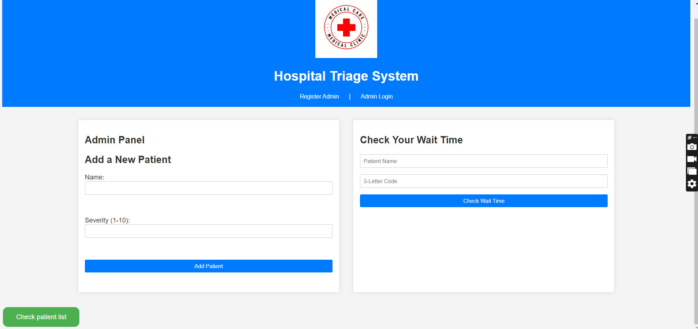
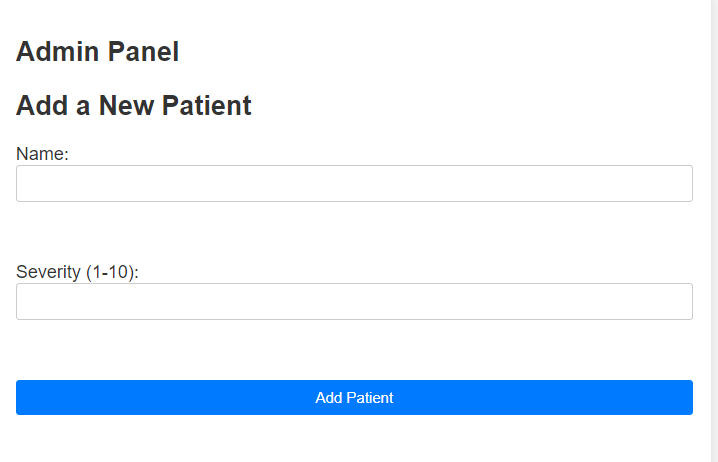
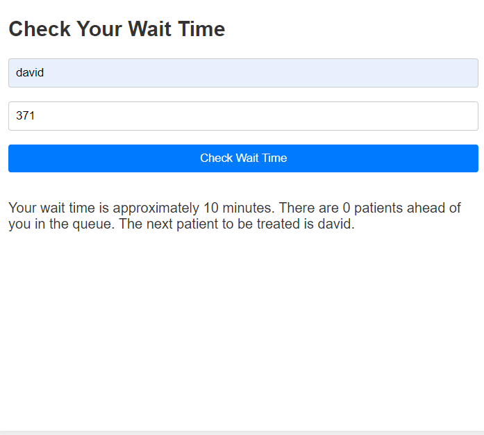
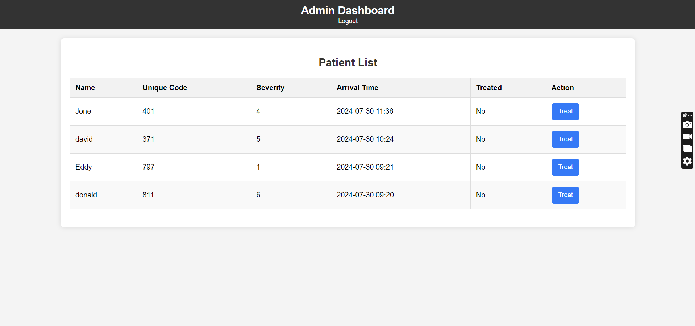

Overview
The Hospital Triage System is a web-based application designed to streamline the process of managing and understanding wait times for patients in the emergency room. The system aims to help both hospital staff and patients by providing clear and accurate information regarding patient prioritization and expected wait times. The application is administered by triage staff and incorporates two primary factors to determine patient priority: the severity of injuries and the length of time a patient has already been in the queue.
Key Features
Patient Registration and Management
Hospital staff can add new patients to the system through an intuitive interface. Each patient is assigned a unique code for identification. Patients are categorized based on the severity of their injuries on a scale from 1 to 10.
Wait Time Calculation
The system calculates the estimated wait time for each patient based on their severity and arrival time. Higher severity patients are prioritized, but wait time also considers the time already spent in the queue. Adjusted wait times are recalculated dynamically as patients are treated.
Real-time Updates
The system continuously updates the list of patients and their wait times. Patients can check their current wait time by entering their name and unique code.
Admin Dashboard
Admins can log in to view and manage the list of all patients. The dashboard displays patient details including name, unique code, severity, arrival time, and whether they have been treated. Admins can mark patients as treated, which adjusts the wait times for the remaining patients accordingly.
Security
Admin accounts are secured with unique usernames and hashed passwords. Only authenticated admins can access the patient management dashboard.
Technical Specifications
Front-end
HTML, CSS, and JavaScript are used to create the user interface. The application includes forms for patient registration and checking wait times, and a dashboard for admins.
Back-end
PHP is used for server-side scripting. The back-end handles patient data management, wait time calculations, and admin authentication.
Database
PostgreSQL is used to store patient and admin data. Tables include patients and admins, with fields for storing necessary information such as patient severity, arrival time, and admin credentials.
APIs and Data Handling
The application uses AJAX to fetch and update patient data without reloading the page. JSON is used for data exchange between the front-end and back-end.
Benefits
The system helps triage staff quickly and accurately manage patient prioritization and wait times. Patients have clear visibility of their wait times, reducing uncertainty and improving their overall experience. The system dynamically recalculates wait times as patients are treated, ensuring that the most urgent cases are handled promptly.